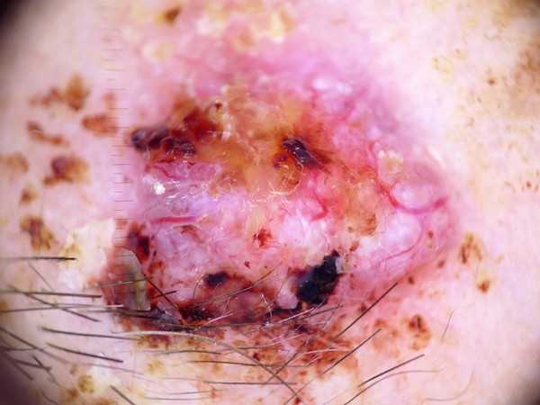

-
What is this lesion?
Basal cell carcinoma (BCC) is a common variant of epithelial skin cancer that rarely metastasizes but grows destructively if untreated.
-
What does it look like?
BCCs appear in different morphologic variants (flat, nodular, pigmented, cystic).
Nodular BCC is the most common type typically found in sun exposed sites. They are translucent nodules or plaques on the skin with raised rolled edge and ulceration.
Superficial BCCs are commonly found on the trunk or extremities. They are well circumscribed scaly red plaques with fine border along periphery.
Pigmented BCCs has prominent pigment present within the lesion and tend to occur in darker skin types. They may be mistaken for melanoma based on their clinical appearances.
-
Known risk factors
Risk factors for skin cancers include:
- excessive prior sun exposure
- presence of multiple skin moles
- presence of abnormal-looking moles
- family history of skin cancer
- chronic systemic immunosuppression
Ultraviolet induced types of melanoma include superficial spreading melanoma, nodular melanoma and lentigo maligna melanoma.
-
Should I see a doctor?
YES. BCC is highly treatable. It is best to have the lesion treated by a doctor. The earlier BCC is diagnosed, the better the patient’s chance of survival.
-
What the doctor would do about it?
Treatment options include simple surgical excision, electrodessication and curettage, micrographic surgery and radiation therapies.
